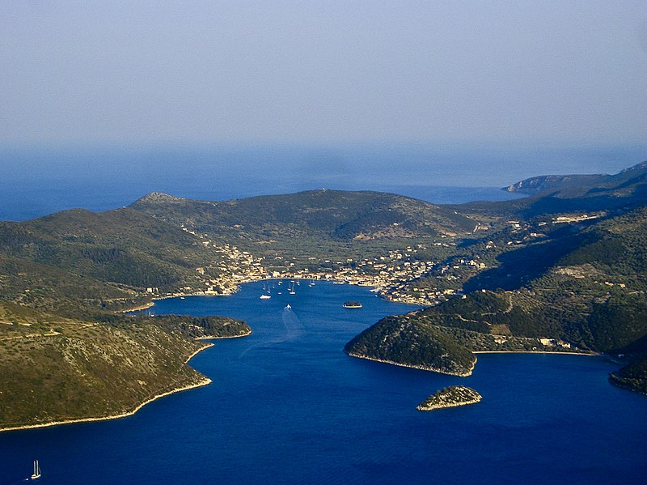

terenceithaque

Ithaque est une île grecque située dans la mer Ionienne proche de Céphalonie.
Vathy, capitale d'Ithaque.
Cliquez ici pour voir la suite.
En savoir plus sur Ithaque sur Greeka (site en Anglais).
Vous cherchez le contenu d'une plage en particulier? Cliquez ici pour accéder à l'index des plages.
Vous n'êtes pas sur la page que vous cherchez? Dirigez vous vers l'index.
Vous vous posez des questions sur le contenu des mises à jour du site? Cliquez ici pour voir toutes les infos sur les mises à jour.